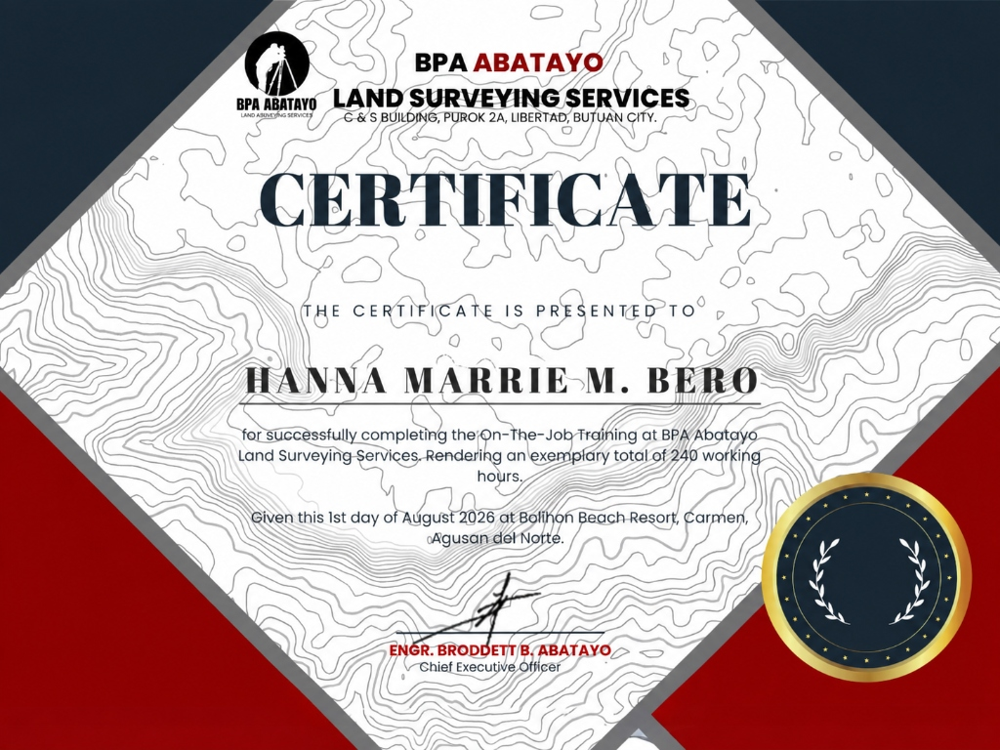
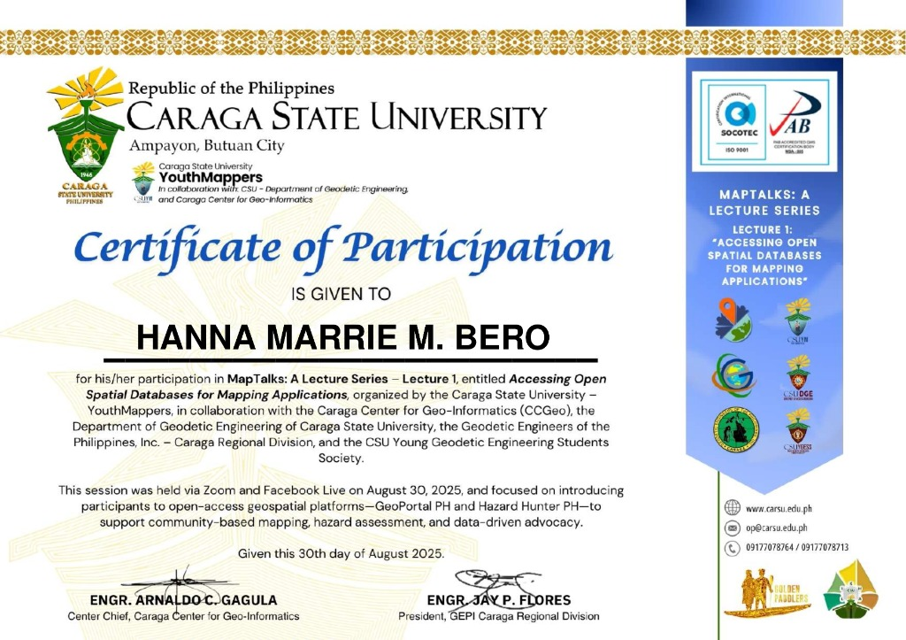

Trainings & Seminars
Documented participation in technical symposia, specialized geodetic lectures, open-source geospatial mapping workshops, and verified credentials.
3rd Geo-Spatial Technologies for Earth Monitoring Symposium (Geo-STEMS 2026)
Advanced symposium focusing on emerging geospatial applications for earth observation, environmental monitoring, satellite telemetry, and disaster resilience. Explored modern geomatics infrastructure, multi-spectral image processing, and UAV aerial survey integrations.
Practical Land Surveying Field Training & Internship (240 Hours)
Conferred for exemplary completion of 240 hours of intensive practical land surveying, GNSS satellite observations, cadastral boundary relocation, and AutoCAD blueprint drafting under Engr. Broddett B. Abatayo, CEO. Achieved an exemplary performance evaluation rating of 98%.

{kind=link}
MapTalks: Accessing Open Spatial Databases for Mapping Applications
Comprehensive technical session focused on utilizing national open-access geospatial portals. Introduced practical workflows for downloading, handling, and visualizing spatial datasets from GeoPortal PH and HazardHunterPH to support evidence-based community mapping, multi-hazard risk assessment, and data-driven governance.

{kind=link}
2nd Geo-Spatial Technologies for Earth Monitoring Symposium (GeoSTEMS 2025)
Academic gathering on cutting-edge geospatial solutions for natural resource management, precision agriculture, and infrastructure monitoring. Emphasized accurate geodetic controls and integration of GIS datasets with public policy planning.
Upcoming Professional Seminars & Certifications
Additional professional seminars, specialized survey camps, and continuing professional development (CPD) accredited courses will be documented here as new credentials are acquired.